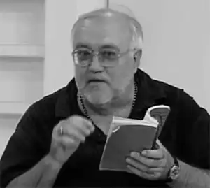

Левченко Сергій Прокопович народився 9 січня 1954 у м.Черкаси. Закінчив філологічний факультет Черкаського педагогічного інституту. Писав у стилях: аванґард, модерн, постмодерн. Є автором 21-ї книги. Друкувався як у міцевій періодиці, так і в республіканській, а також в Естонії: журнали "Таллінн" та "Pikker", міжнародному журналі "Склянка Часу*Zeitglas". Заснував літгурт "Оратанія", журнал "Апостроф". Його твори публікувалися у колективних збірках авангардного спрямування 90-х років "Боже, ми вільні" (разом із такими авторами як М. Бабак, І. Лавріненко та Є. Найден) та "Доба туманів" (М. Бабак, І. Лавріненко, Є. Найден та М. Воробйов). Його твори також публікувалися у збірці "Urbis et Vicus" (Канів, 2011), "Антологія сучасної новелістики та лірики України" (Канів, 2015).C.П. Левченко є автором численних перекладів з естонської, російської та польської мов.
Працював директором, головним редактором видавництва " Сіяч".
Член Національної спілки письменників України з 1995 року. Батько поетеси Анни Левченко. Помер письменник 13 червня 2019 року.